CULTURE DAY!!
What are the main differences between races and ethnicities around the world? What makes them unique, special or pelicular? How do they still
display their oldest traditions? We have brought to attention some of them in this presentation.
****
NATIVE AMERICANS:
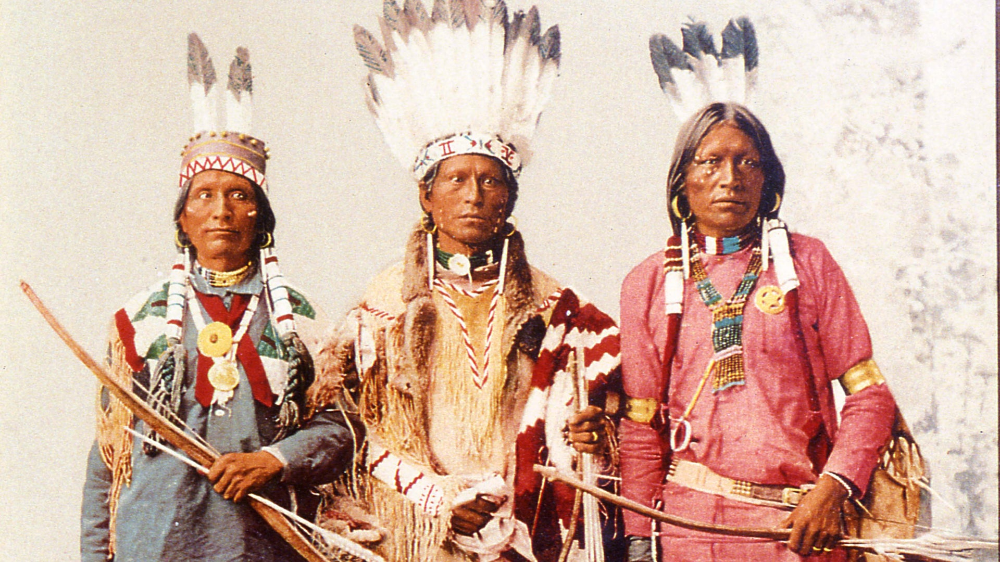
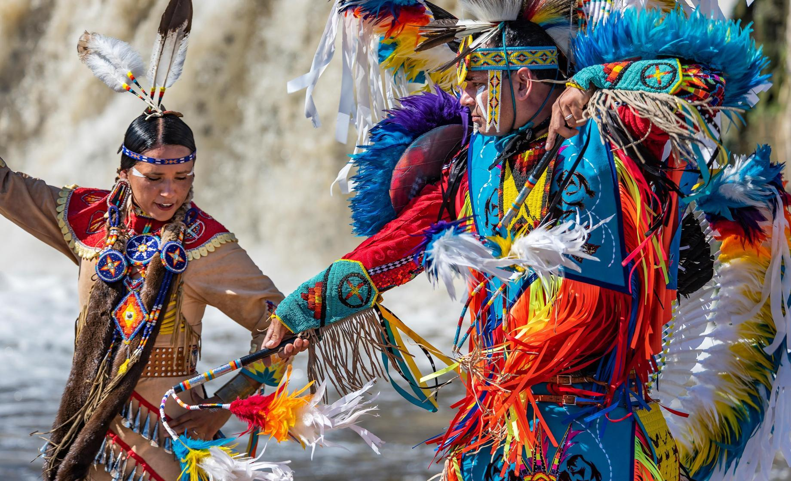
Indigenous tribes are culturally distinct ethnic groups who are generally historically associated with a specific territory on which they
depend. So, there are approximately five thousand Indigenous nations throughout the world. As defined by the United States Census, “Native Americans" are originally
from the contiguous United States, along with Alaska Natives, Native Hawaiians, Samoan Americans, Chamorros and other Pacific Islanders.
Indigenous peoples' homelands have historically been colonized by larger ethnic groups, who justified colonization with beliefs of racial and religious superiority,
land use or economic opportunity. They continue to face threats to their sovereignty, economic well-being, languages, ways of knowing, and access to the resources on
which their cultures depend.
Native American cultures across the United States are notable for their wide variety and diversity of lifestyles, regalia, art forms and
beliefs. The northwest culture area, for example shared common traits such as salmon fishing, woodworking, large villages or towns and a hierarchical social structure.
Though cultural features, language, clothing, and customs vary enormously from one tribe to another, there are certain elements which are encountered frequently and
shared by many tribes. Early European American scholars described the Native Americans as having a society dominated by clans. In the early years, as these native
peoples encountered European explorers and settlers and engaged in trade, they exchanged food, crafts, and furs for blankets, iron and steel implements, horses, trinkets,
firearms, and alcoholic beverages. Today, while remaining faithful to their traditions, Native American cultures continues to evolve and adapt to circumstances.
Some have also been assimilated by other populations or have undergone many other changes.
New Age and Neopagan adherents often look to the cultures of Indigenous peoples seeking to find ancient traditional truths and spiritual
practices to appropriate into their lifestyles and worldviews which has also been subject to heavy criticism and debate from the natives themselves but not only.
That’s why Indigenous knowledge is considered as very important matter for issues linked with sustainability. Another common occurrence is to extend Indigenous
knowledge beyond its limits and into unrelated meanings that western consumers find spiritually profound. It serves non-Natives to add a narrative and value beyond that
which already exists within the knowledge base of Indigenous peoples. Not only do these fictionalized accounts of some Indigenous knowledge and traditions skew the
beliefs of onlookers, but they also contribute to cultural genocide as the actual spiritual and religious beliefs of the Indigenous people are disappeared and
replaced with the westernized fiction.
LATIN/HISPANICS:
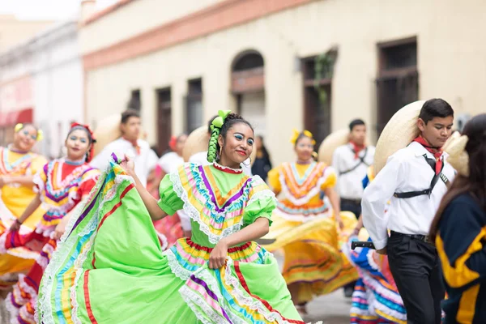
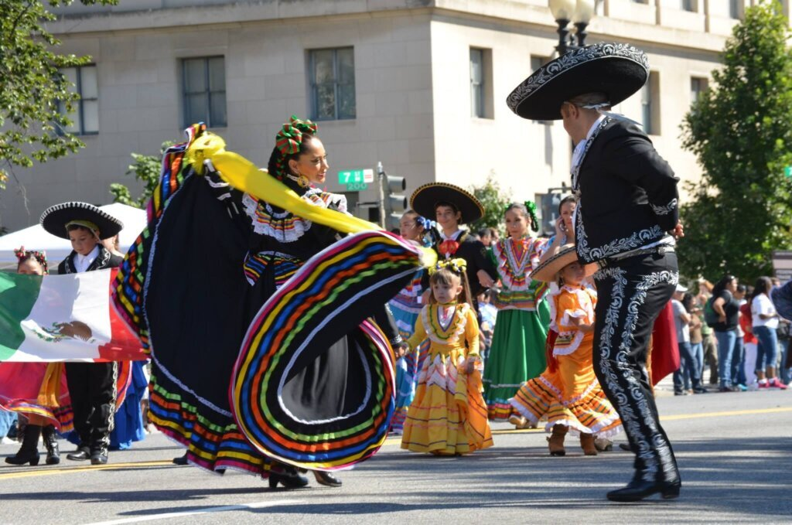
People often confuse the terms "Hispanic" and "Latino", assuming they mean the same thing. However, the term "Hispanic" refers to the
descendants of Spanish-speaking regions. The term "Latino" refers to all the people who are from South-Central America. This distinction is very important because
Latino culture is derived directly from Latin America, so not all Hispanic people share the same background, or cultural traditions.
Latin America has a very interesting culture. The people who live in those countries are known as the most hospitable in the world, especially islanders. Latin
americans love festivals. There is always something to celebrate at any time of the year. They are widely known for their particular dances and diverse music.
Many famous influential artists or singers in the industry are latino. To be mentioned is: Shakira, Selena Quintanilla Perez, Ricky Martin, J-Balvin etc. One other
thing, also out-standing about them would be the popularity and amazing performance in sports. Diego Armando Maradona and Leonel Messi are two of the best football
players in history, both originated from Argentina. Latin American food and cuisine includes many delicious dishes, full of tasty and colorful ingredients such as
Guacamole, Nachos, Tacos, Burritos, Empanadas, Enchiladas etc. Every country has its own famous recipes. Hispanic culture, on the other hand, is full of traditions that
have been influenced by the spanish and originated in Spain. Many of these traditions are centered around food. For them, this is called "food culture".
AFRICAN-AMERICANS:
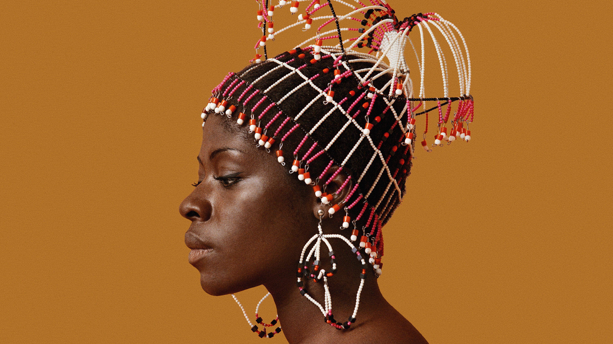
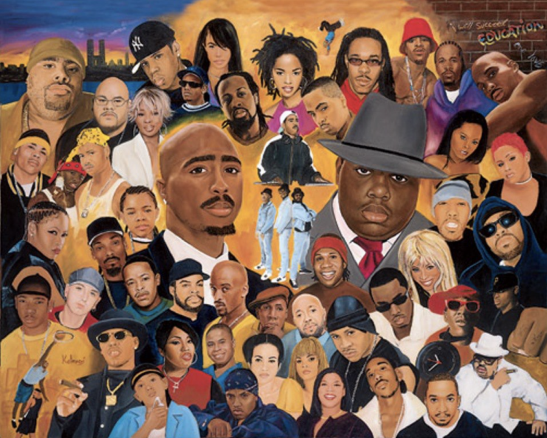
African-American culture refers to the contributions of African Americans to the culture of the United States, either as part of or distinct
from mainstream American culture. The culture is both distinct and enormously influential on American and global worldwide culture as a whole. African-American culture
is rooted in the blend between the native African cultures of West Africa and Central Africa and the European culture that has influenced and modified its development
in the American South. Understanding its identity within the culture of the United States, that is, in the anthropological sense, conscious of its origins as largely a
blend of West and Central African cultures. Although slavery greatly restricted the ability for Africans to practice their original cultural traditions, many practices,
values, and beliefs survived. For many years African-American culture developed separately from American culture, both because of slavery and the persistence of racial
discrimination in America, as well as African-American slave descendants’ desire to create and maintain their own traditions.
After emancipation, unique African-American traditions have continued to flourish, as distinctive traditions or radical innovations in music, art, literature,
religion, cuisine, and other fields. African-American identity was established during the period of slavery, producing a dynamic culture that has had and continues to
have a profound impact on American culture as a whole, as well as that of the broader world. Elaborate rituals and ceremonies were a significant part of
African-Americans’ ancestral culture. Many West African societies traditionally believed that spirits dwelled in their surrounding nature. From this disposition, they
treated their environment with mindful care. They also generally believed that a spiritual life source existed after death and that ancestors in this spiritual realm
could then mediate between the supreme Creator and the living. Honor and prayer were displayed to these “ancient ones”, the spirit of that past. West Africans also
believed in spiritual possession.
BALKAN COUNTRIES:
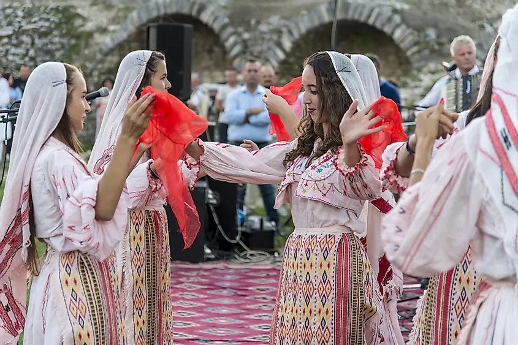
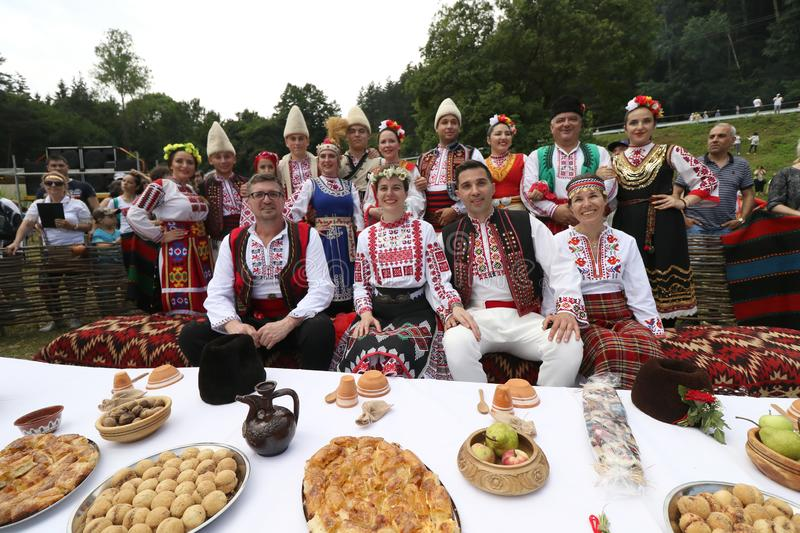
The Balkans also known as the Balkan Peninsula, is a geographical area in southeastern Europe with various geographical and historical definitions.
The region takes its name from the Balkan Mountains that stretch throughout the whole of Bulgaria.
The history of the Mediterranean region and of the cultures and people of the Mediterranean Basin is important for understanding the origin and development of the
Mesopotamian, Egyptian, Persian, Illyrian, Roman, Thracian, Byzantine, Arab, Ottoman, Hebrew, Christian and Islamic cultures. The Mediterranean Sea was also the
central superhighway cultural exchange between diverse peoples encompassing three continents: Western Asia, North Africa, and Southern Europe.
Balkan cuisine is a type of regional cuisine that combines characteristics of European cuisine with some of those from Western Asia. It can also be found in
Vienna as a result of post-WWII migration to that city. Germany has restaurants serving Balkan cuisine, which were often called Yugoslavian restaurants until the
outbreak of the Yugoslav Wars. A restaurant selling Romani cuisine opened in Slovenia 2014. Romani cuisine, the traditional food of the Romani people, includes dishes
from traditional Balkan cuisine. Balkan music is a type of music found in the Balkan region of southeastern Europe. The music is characterised by complex rhythm.
Famous bands in Balkan music include Taraf de Haïdouks, Fanfare Ciocărlia, and No Smoking Orchestra.
EAST-ASIANS:
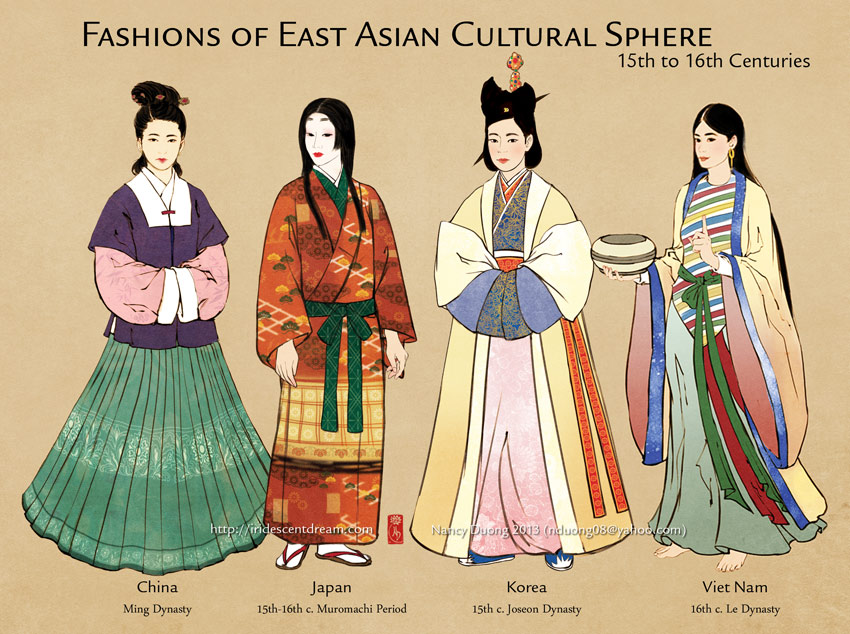
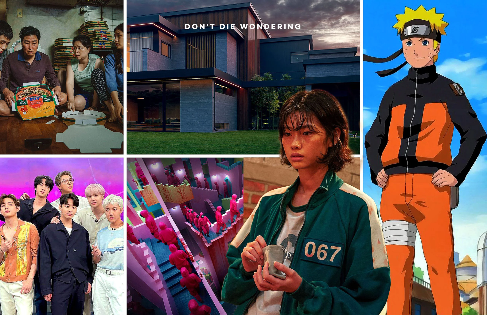
East Asia is the easternmost region of Asia, which is defined in both geographical and ethno-cultural terms.The modern states of East Asia
include: China, Japan, Mongolia, North Korea, South Korea, and Taiwan. Those countries are very rich in their own way, to talk about their culture, lifestyle,
technology etc. East Asia, especially Chinese upbringing, is regarded as one of the earliest cradles of civilization. Other ancient civilizations in East Asia that
still exist as independent countries in the present day include the Japanese, Korean and Mongolian ones. The East Asian culture, often also called the “Confucian
culture”, prevails in communities that use chopsticks: the Chinese communities (the Chinese Mainland, Hong Kong, Taiwan, and Macao), Japan, the two Koreas, Vietnam,
and a large part of Singapore. Rapid modernisation, and a focus on high technology, have allowed East Asia to register rapid economic growth. The region is home to
some of the world's most affluent nations and sees high standards of living. Japan, popularly known as the land of rising sun or we may say oldest country in the
world by age, has seen many empires rising and simultaneously, falling. Japan became an influential country only during the Meiji Restoration era. Competition from
local players is increasing rapidly too and it seems only a matter of time before an Asian bank buys up a western wealth manager.
INDIAN/HINDU:
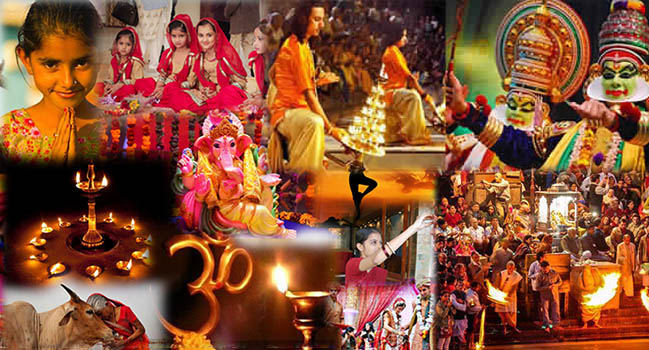
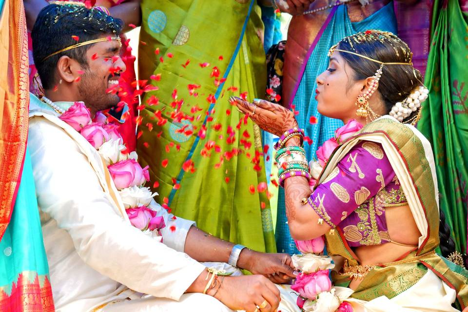
India is home to over a billion people, accommodating incredible cultural diversity between languages, geographic regions, religious
traditions and social stratifications, making it of the most ethnically diverse populations in the world. In recognition of this large demographic diversity, the
following descriptions are not intended to represent every Indian person. But, generally speaking, they tend to have a strong sense of pride in the distinctiveness
and diversity of their culture. For example, the country’s agricultural expansions and technological advancements in infrastructure, science and engineering are
sources of pride. Moreover, a considerable amount of pride stems from India's rich artistic cultural exports of music, fine arts, literature and spirituality
(especially the practice of yoga).
Hinduism continues to thrive in modern-day India and has been particularly influential in all its forms.The religion affects everyday life
and social interactions among people through the many Hindu-inspired festivities, artistic works and temples. The Krishna Lila (The Playful Activities of Krishna) is
another popular tale among many villages. It is common to find images of gods and goddesses in public and private spaces at all times of the year. The elephant-headed
god, known as Ganesh, is particularly popular due to his believed ability to remove obstacles. There are also many festivals celebrated throughout the country
dedicated to the many Hindu narratives and deities.
Most religious festivals and dates of significance are based on the lunar, solar or lunisolar calendar. Therefore, the dates vary each year
according to the Gregorian calendar. Some of them are:
- Pongal Festival – January
- Shiva’s Birthday – February
- Krishna Janmashtami – August or September
- Ganesh Chaturthi – August or September
- Navaratri – September or October
- Diwali – October or November